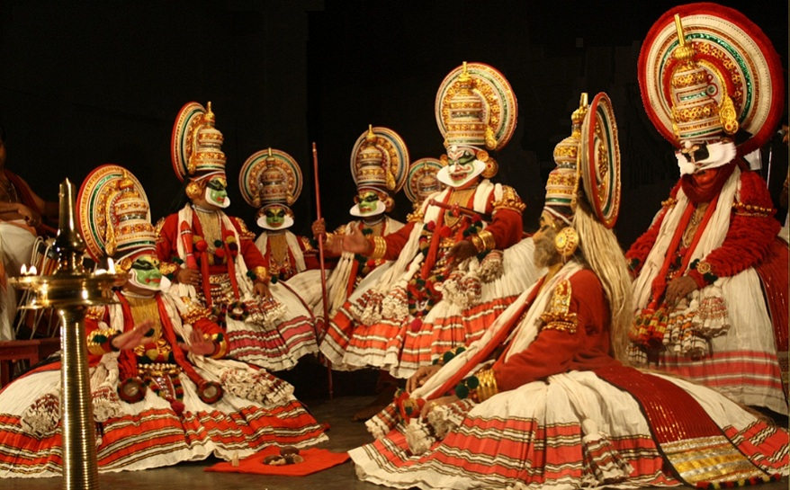

Traditional Arts & Music

India’s traditional arts and music reflect the country’s deep cultural roots, blending history, storytelling, and craftsmanship. From intricate paintings and textiles to mesmerizing classical and folk music, each form carries centuries of tradition and artistic excellence.
Traditional Indian Art Forms
Indian art is a visual expression of mythology, nature, and daily life, passed down through generations. Each region has its unique artistic style, reflecting local traditions and beliefs.
Folk and Tribal Paintings
Madhubani (Bihar): Known for its intricate patterns and mythological themes, often created using natural dyes and fingers or twigs.
Warli (Maharashtra): A tribal art form using geometric patterns to depict daily life and nature.
Pattachitra (Odisha & West Bengal): Narrative scroll paintings featuring mythological tales, created on cloth or dried palm leaves.
Kalamkari (Andhra Pradesh & Tamil Nadu): A hand-painted or block-printed textile art form that portrays epic stories and floral motifs.
Textile & Handicraft Traditions
Chikankari (Uttar Pradesh): Delicate hand embroidery on fine muslin or cotton fabric, originally developed in the Mughal era.
Kanjeevaram Weaving (Tamil Nadu): Silk sarees woven with gold and silver threads, known for their durability and intricate motifs.
Bandhani (Gujarat & Rajasthan): A tie-dye technique that produces vibrant patterns on fabric.
Terracotta Pottery (West Bengal & Rajasthan): Handmade clay sculptures and pottery featuring traditional motifs.
Indian Classical Music
Classical music in India is deeply spiritual, based on structured melodies (ragas) and rhythmic cycles (talas). There are two main styles, each with its own rich legacy.
Hindustani Classical (North India)
Focuses on improvisation and slow development of ragas.
Famous musicians: Pandit Ravi Shankar (Sitar), Ustad Zakir Hussain (Tabla).
Key ragas: Bhairav (morning raga), Yaman (evening raga).
Carnatic Classical (South India)
Structured compositions, often devotional in nature.
Famous musicians: M. S. Subbulakshmi (Vocal), L. Subramaniam (Violin).
Key ragas: Shankarabharanam, Kalyani.
Indian Folk Music
Folk music is deeply rooted in regional cultures, celebrating festivals, traditions, and daily life.
Popular Folk Traditions
Baul (West Bengal): Mystical songs with simple instruments like the ektara, reflecting spiritual philosophy.
Lavani (Maharashtra): A high-energy dance and music form known for its powerful storytelling.
Bihu (Assam): Celebratory songs and dances performed during the Assamese New Year.
Rajasthani Folk (Rajasthan): Includes soulful Manganiyar songs and energetic Kalbeliya dance music.
Indian Musical Instruments
Indian classical and folk music is enriched by a variety of traditional instruments, each producing unique sounds.
String Instruments
Sitar: A plucked instrument used in Hindustani classical music, made famous by Ravi Shankar.
Veena: A South Indian string instrument, often played in Carnatic music.
Sarangi: A bowed instrument known for its deep, expressive sound.
Percussion Instruments
Tabla: A pair of hand drums used in Hindustani music, known for its intricate rhythms.
Mridangam: A double-headed drum central to Carnatic music.
Dhol: A large drum used in Punjabi Bhangra music.